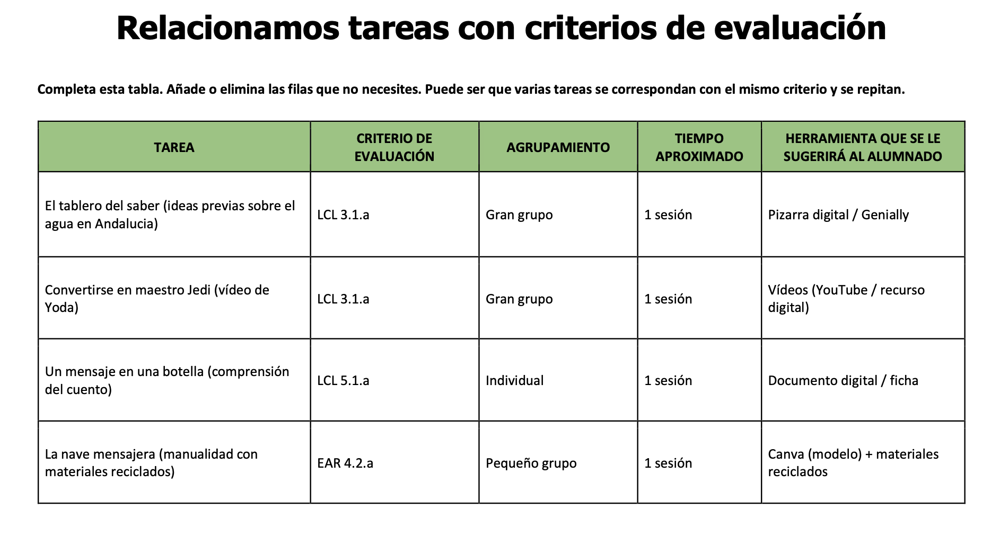
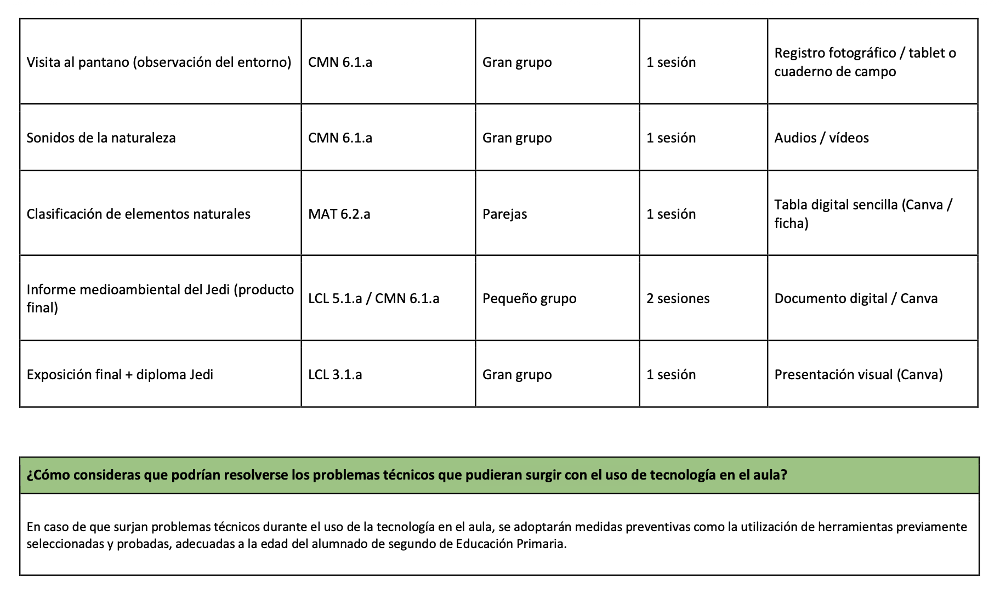
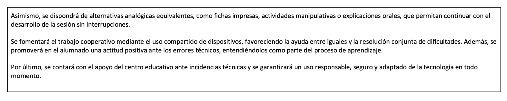
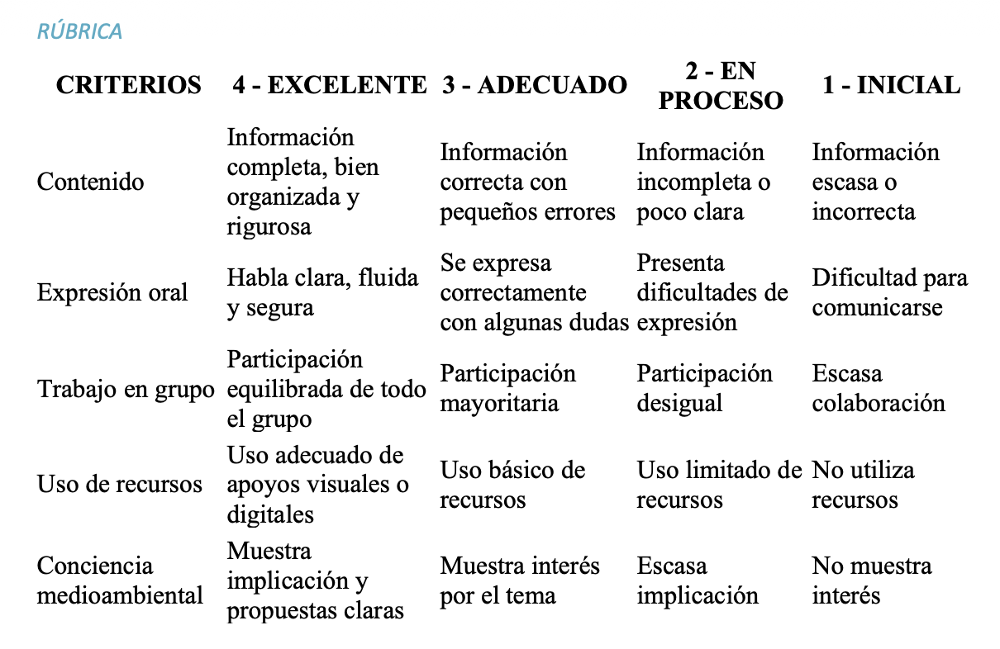
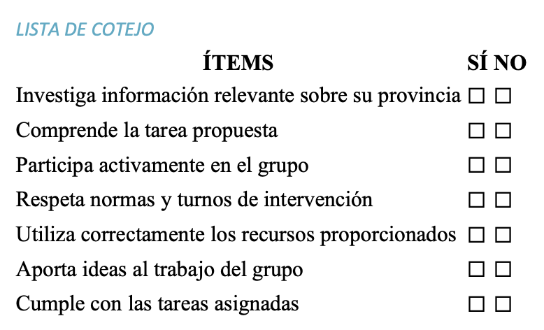
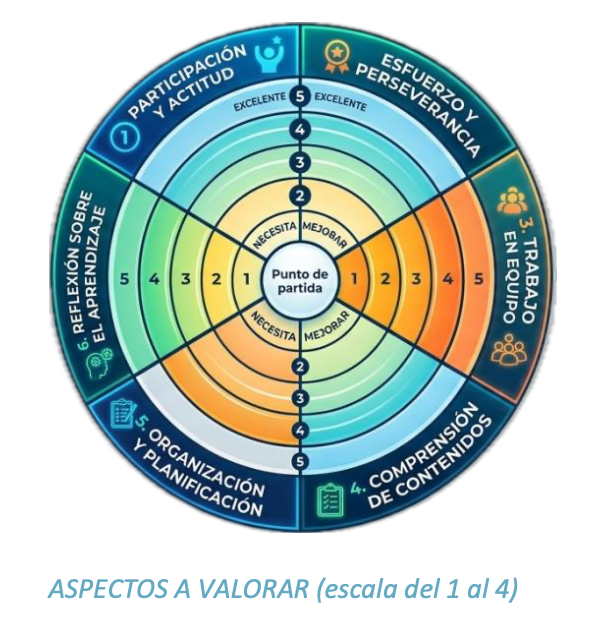

Evaluación del aprendizaje
La evaluación se realizará de forma continua a lo largo de toda la Situación de Aprendizaje.
Se tendrán en cuenta los siguientes aspectos:
Participación activa en las actividades
Trabajo en equipo
Calidad del informe elaborado
Exposición oral
Se utilizarán diferentes instrumentos de evaluación como:
Rúbricas
Listas de control
Observación directa
Estos instrumentos permiten valorar tanto el proceso como el resultado del aprendizaje.
Los instrumentos de evaluación utilizados han sido diseñados durante el desarrollo del curso, incluyendo rúbricas y otros recursos que permiten recoger información sobre el proceso de aprendizaje y ofrecer retroalimentación al alumnado.
Se fomentará también la autoevaluación y coevaluación del alumnado, promoviendo la reflexión sobre su propio aprendizaje y el desarrollo de la competencia aprender a aprender.
La evaluación se vincula directamente con los criterios de evaluación establecidos en el currículo, permitiendo valorar el grado de adquisición de las competencias clave a través de las diferentes tareas propuestas en la Situación de Aprendizaje.
Relación entre tareas y criterios de evaluación.
A continuación, se presenta la relación entre las tareas desarrolladas en la Situación de Aprendizaje y los criterios de evaluación correspondientes, garantizando la coherencia entre las actividades propuestas y el desarrollo de las competencias del alumnado.
En la siguiente tabla se muestra la correspondencia entre las tareas desarrolladas y los criterios de evaluación trabajados en la situación de aprendizaje



“Gestión de posibles dificultades técnicas"
En caso de dificultades técnicas, se utilizarán herramientas previamente probadas y adaptadas al nivel del alumnado. Además, se dispondrá de alternativas analógicas como fichas o actividades manipulativas, garantizando la continuidad del aprendizaje.
Asimismo, se garantiza una evaluación inclusiva y adaptada a la diversidad del alumnado.
Instrumentos de evaluación
En esta Situación de Aprendizaje se han diseñado diferentes instrumentos de evaluación con el objetivo de valorar tanto el proceso como el resultado del aprendizaje del alumnado.
Estos instrumentos permiten llevar a cabo una evaluación continua, formativa y adaptada a las características del alumnado, facilitando la recogida de información y la mejora del proceso de enseñanza-aprendizaje.
Rúbrica del producto final
La rúbrica se utilizará para evaluar el producto final de la Situación de Aprendizaje, consistente en la elaboración y exposición del informe medioambiental del “Jedi”.
Este instrumento permite valorar aspectos como la calidad de los contenidos, la expresión oral, el trabajo cooperativo y la conciencia medioambiental, facilitando una evaluación objetiva y estructurada.
Además, será compartida previamente con el alumnado para orientar su trabajo y favorecer la evaluación formativa.

Lista de cotejo para el seguimiento del proceso
La lista de cotejo se empleará durante el desarrollo de las diferentes misiones, permitiendo realizar un seguimiento continuo del alumnado.
Este instrumento permitirá valorar la participación, el trabajo en grupo, el cumplimiento de las tareas y el uso adecuado de los recursos, facilitando la observación directa y la recogida de evidencias.

Diana de autoevaluación
La diana de evaluación se utilizará al finalizar la Situación de Aprendizaje como instrumento de autoevaluación.
Permite al alumnado reflexionar sobre su propio aprendizaje, valorando aspectos como su implicación, participación y adquisición de conocimientos, favoreciendo el desarrollo de la autonomía y la metacognición.

En conjunto, estos instrumentos permiten recoger información desde diferentes perspectivas, favoreciendo una evaluación más completa, objetiva y centrada en el progreso del alumnado.